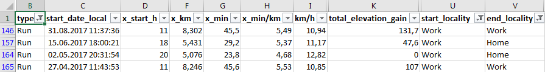
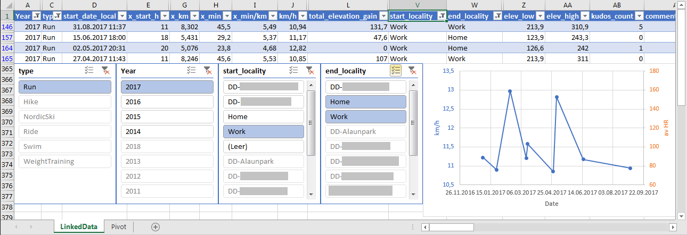
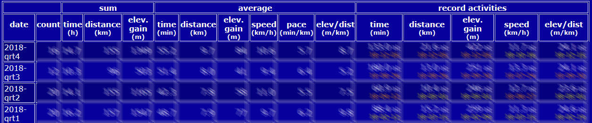
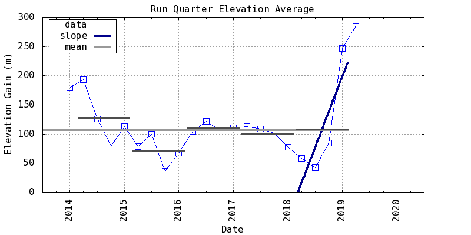

Generated Excel report

Custom charts and slicers on a connected analysis sheet

Activity statistics table

Activity statistics chart

| Disclaimer | Haftungsausschluss |
|---|---|
| This piece of software is tested extensivly and to the best of my knowledge, but I cannot garanty for error-free operation. Use at your own risk. Developed by Torben Menke, using Strava's API, requires a Strava account. | Diese Software ist ausgiebig und nach bestem Wissen und Gewissen getestet, trotzdem können Fehler nicht ausgeschlossen werden. Ich übernehme keinerlei Haftung für Fehler und garantiere nicht für die korrekte Funktionsweise. Entwicklet von Torben Menke, unter Verwendung der Strava API, erfordert einen Strava account. |
| Security and Privacy I put quite some effort on implementing as much security and privacy issues: All communication is encrypted via HTTPS. The access to your data is not via your login credentials (my app does not see your password!). Instead an "access token" is generated and provided by Strava after you granting (temporary) permission to this app. For reasons of data reduction and data responsibility, these sensitive access tokens as well as your Strava content are not stored permanently but are deleted after 1 hour (at the next login by anyone) and the access token is de-registered at Strava (can be checked here). As a consequence, the user must grant access again via Strava before each use of my app. Furthermore, I have implemented a button for manually deletion of this data. One exception: I do not delete your coordinates to known locations automatically. In order to do so you can replace the list with an empty list, which leads to deletion of your locations. The access token, the temporary JSON data of your Strava activities and your known locations are outside the server's web folder and are therefore technically not accessible from the internet. The access tokens are only transmitted to communicate with Strava (and as little as possible and not via URL, but in the body) and encrypted via HTTPS. The communication between your browser and my website uses a non-critical custom session ID, which allows the web server to retrieve the appropriate access token from its temporary storage. Despite these efforts, I can not guarantee 100% security of your data, so use at your own risk. |
Sicherheit und Privatsphäre Ich habe mir größte Mühe gegeben so viel Sicherheit und Privatsphäre so gut wie möglich zu respektieren und zu schützen: Sämtliche Kommunikation erfolgt verschlüsselt via HTTPS. Der Zugriff auf Eure Daten erfolgt nicht über die eure Logindaten (diese bekommt meine App nicht zu sehen!), sondern über einen „Accesstoken“, der von Strava nach (temporären) Freigabe von euch für diese App generiert wird. Aus Gründen der Datensparsamkeit und der damit einhergehenden Verantwortung werden diese sensiblen Accesstoken und ebenso wie zwischengespeicherte Strava Inhalte nicht permanent gespeichert, sondern schon nach 1 Stunde (beim nächsten Login durch irgendeinen Besucher) gelöscht (Hier zu prüfen.). Als Konsequenz muss der Anwender vor jeder Verwendung meiner App erneut den Zugriff via Strava gewähren. Ferner habe ich einen Button zum manuellen Löschen dieser Daten implementiert. Einzige Ausnahme: Eure Koordinaten zu bekannten Orten lösche ich nicht automatisch, diese könnt ihr durch eine leere Liste ersetzen, dann werden diese gelöscht. Die Accesstoken, die temporären von Strava kommenden JSON Daten der Aktivitäten und eure bekannten Orte liegen außerhalb des Web-Ordners des Servers und sind damit technisch nicht aus dem Internet abrufbar. Die Accesstoken werden nur zur Kommunikation mit Strava (und so wenig wie möglich) über das Netz (und nicht via URL, sondern im Body) und verschlüsselt via HTTPS übertragen. In der Kommunikation zwischen eurem Browser und meiner Webseite wird eine unkritische selbstdefinierte Session-ID verwendet, über die sich der Webserver den passenden Accesstoken aus seinem temporären Speicherort holt. Trotz dieser Aufwände kann ich keine 100% Sicherheit der Daten garantieren, daher erfolgt die Benutzung auf eigenens Risiko. |